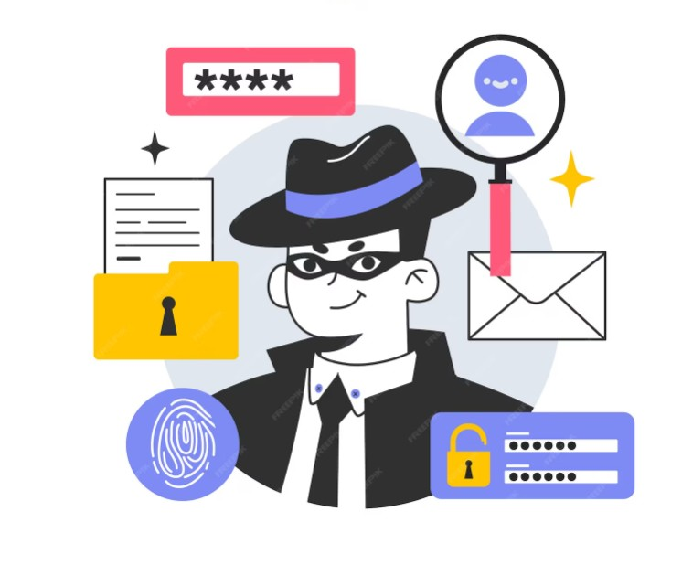

El robo de identidad por IA
Reconstrucción de Identidad mediante Inteligencia Artificial: Una Amenaza Emergente
La Reconstrucción de Identidad es una técnica que emplea la inteligencia artificial (IA) para combinar datos dispersos y crear una identidad digital completa de una persona. Esta práctica, aunque puede tener aplicaciones legítimas en áreas como la preservación histórica, también ha sido aprovechada por ciberdelincuentes para llevar a cabo robos de identidad sofisticados.
¿Cómo funciona la Reconstrucción de Identidad?
Los ciberdelincuentes recopilan información personal de diversas fuentes, como redes sociales, filtraciones de datos, grabaciones de voz y fotografías. Utilizando herramientas de IA generativa, como los modelos de deepfake, pueden:
- Clonar Rostros y Voces: Crear imágenes y audios falsos que imitan a la perfección a una persona real.
- Generar Documentos Falsos: Producir identificaciones, contratos o registros oficiales que parecen legítimos.
- Simular Comportamientos: Emular patrones de escritura o interacción en línea para engañar a sistemas automatizados.
Esta capacidad permite a los delincuentes suplantar identidades con un alto grado de credibilidad, facilitando fraudes financieros, acceso no autorizado a cuentas y otros delitos domésticos.
Estadísticas Alarmantes
En México, el uso de IA para el robo de identidad ha experimentado un incremento del 218% en el último año, según el Consejo Ciudadano para la Seguridad y Justicia de la Ciudad de México. Durante el período de enero a octubre de 2023, se registraron 1,607 reportes de robo de identidad, siendo las principales fuentes desinformación:
- 62%: Hackeo de información en redes sociales.
- 26%: Robo de información de dispositivos móviles.
- 2%: Clonación de tarjetas bancarias o falsificación de firmas.
Estos datos reflejan la creciente preocupación por el uso indebido de la IA en actividades delictivas.
Medidas de Prevención
Para protegerse contra la reconstrucción de identidad y el robo asociado, se recomienda:
- Activar la Autenticación Multifactor: Añadir capas adicionales de seguridad en cuentas y dispositivos.
- Configurar la Privacidad en Redes Sociales: Limitar la exposición de información personal.
- Utilizar Contraseñas Fuertes y Únicas: Evitar combinaciones fáciles de adivinar.
- Ser Cauteloso con Correos y Mensajes Desconocidos: No hacer clic en enlaces sospechosos.
- Monitorear Actividades Financieras: Revisar regularmente estados de cuenta y alertas de seguridad.